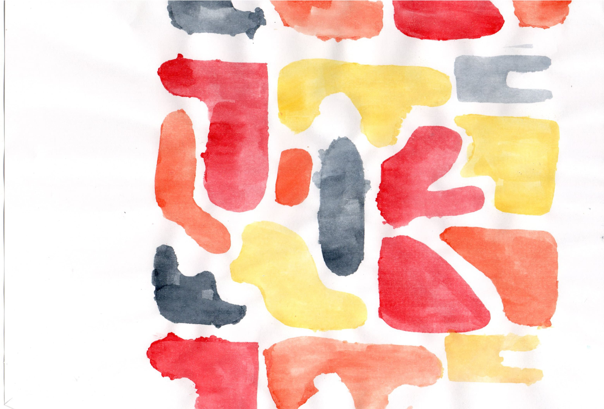
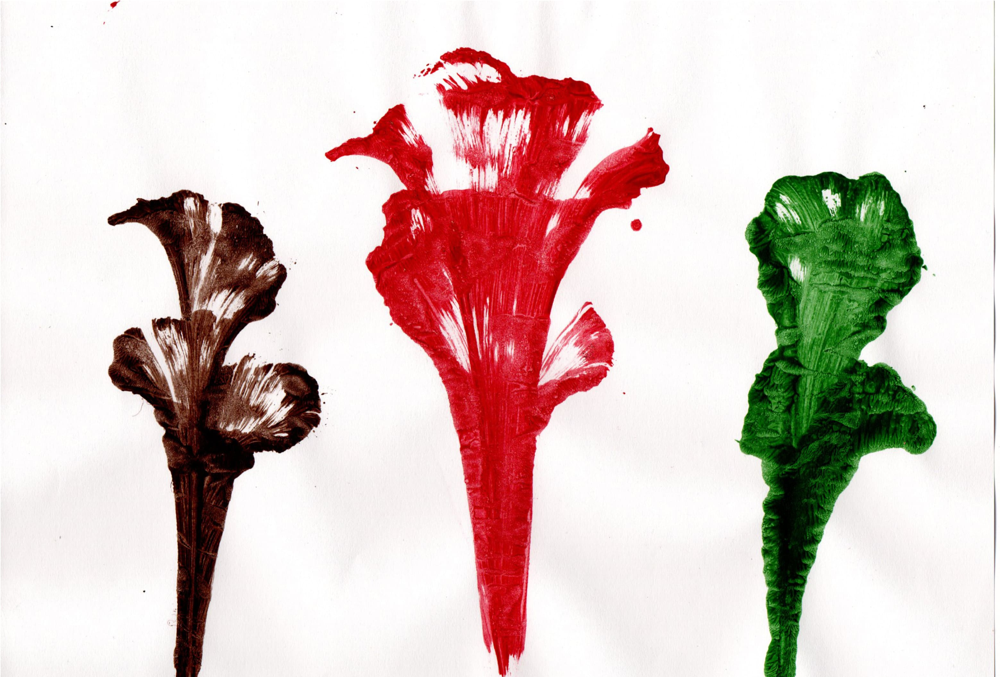
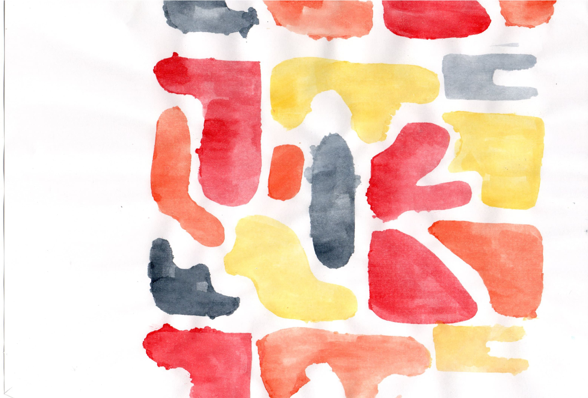
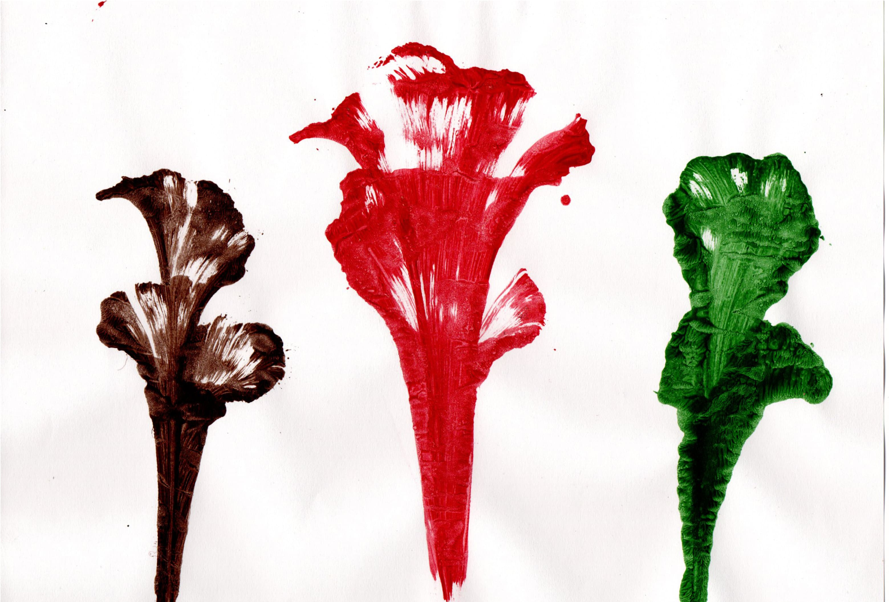
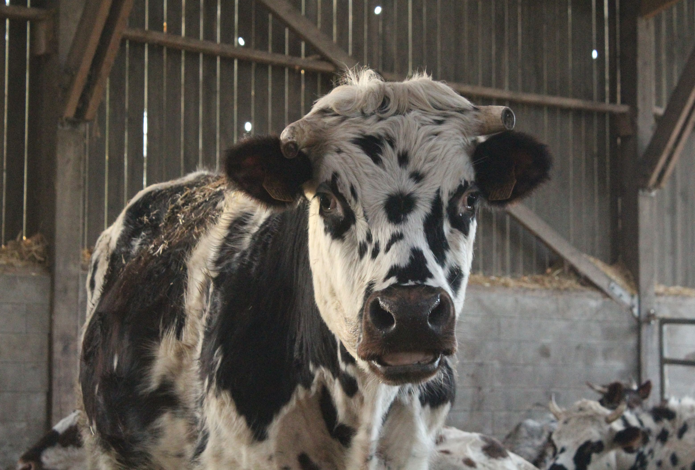
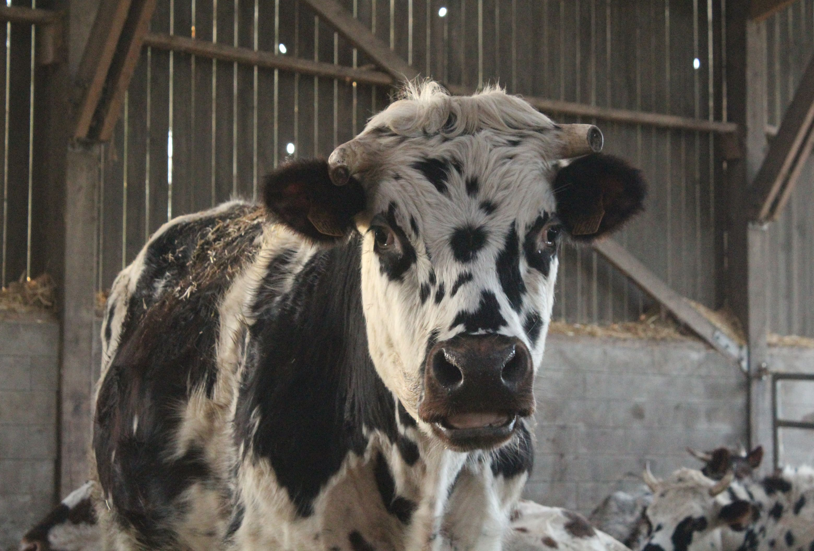
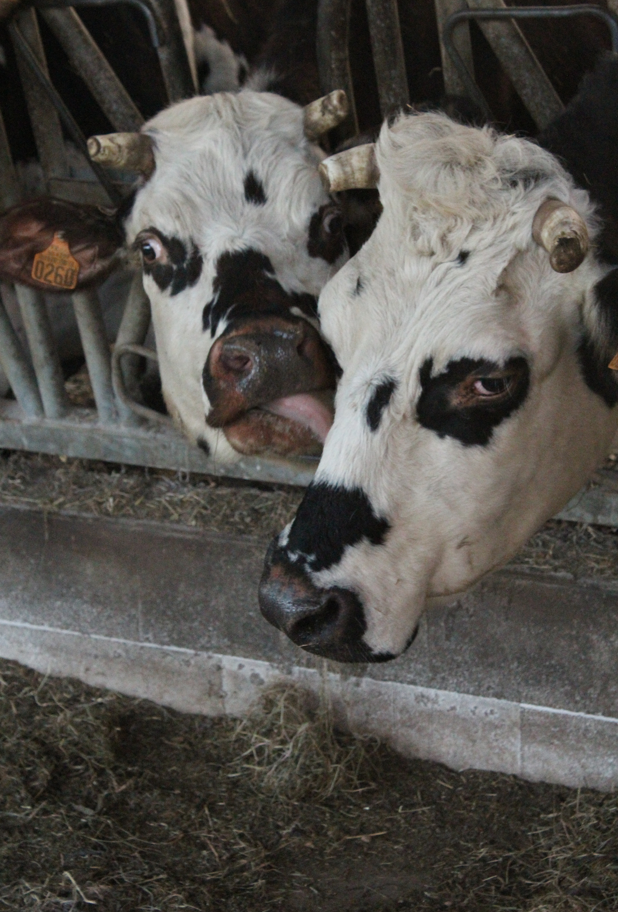
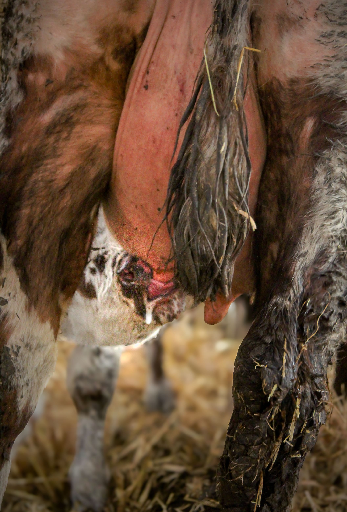
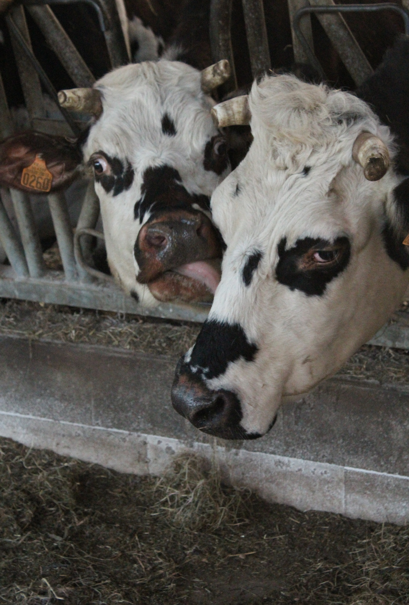
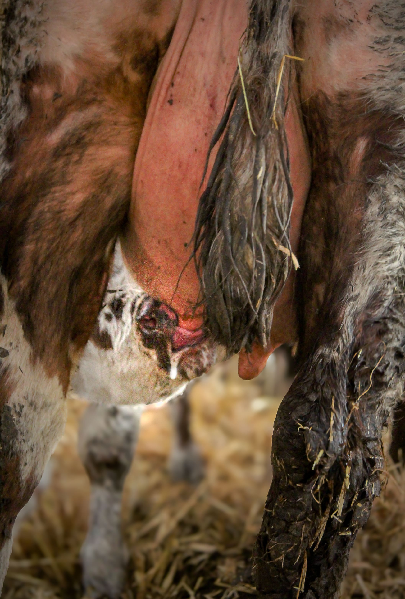

Mon Portfolio

English Games
Lors d'un projet d'une semaine en anglais, en équipe de 4, nous avons conçu un jeu de société en anglais. J'ai créé le plateau, les cartes de jeu et le livret des règles. Cette semaine m'a permis de développer mes compétences en design grâce aux conseils d'une élève en Création Numérique, tout en pratiquant l'anglais.
Workshop
En début d'année, nous avons réalisé un workshop avec une graphiste. Durant une semaine, nous avons réalisé un logo, des illustrations, des packagings, pris des photos et effectué des retouches sur les photos pour une marque. Ce projet nous a permis d'utiliser les logiciels de la suite adobe et de faire de la photographie.
Logo fictif
Enfin de m'exercer sur l'élaboration de logo, j'ai réalisé un logo fictif pour un apiculteur local. Après avoir réalisé le logo, j'ai repris les dimensions des étiquettes d'origine de ses pots et j'ai réalisé la mise en page d'une étiquette. Enfin, pour avoir une mise en situation, j'ai réalisé un mockup.
Création d'affiche
Lors d'un travail de cour, il nous a été demandé de réaliser des affiches pour la marque Nike pour promouvoir leur produit pour les Jeux Olympiques. Pour cela, j'ai réalisé une affiche et une bannière pour les réseaux, en utilisant la technique du collage.
Dessins décalqués
Ce travail a été réalisé durant mon année en école d'art. Nous avions dû réaliser une série de photographie, puis mettre en page ces différentes photos pour créer des mises en pages différentes afin de les décliquer par la suite. Ce travail nous a permis de réaliser différents dessins avec des mêmes photos.
 




Sérigraphie
En école d'art, j'avais des cours de sérigraphie. Durant une nouvelle période de confinement, nous devions réaliser différents visuels avec "les moyens du bord". Une fois de retour en cours, j'ai utilisé les visuels réalisés pour faire une mise en page et pouvoir réaliser une affiche avec la technique de la sérigraphie.
Typographie
Pendant mes cours de typographie, nous avons d'abord réalisé des planches d'écriture à la plume. Pour notre rendu final, nous devions réaliser 6 mots avec la même lettre de début. Puis sur la deuxième partie de l'année, nous devions choisir une lettre puis la décliné sous différentes typographies et en réaliser deux sur des planches de bois, à la peinture.
Dessin minute
Pour ce travail, nous avons réalisé une maquette à partir de boîte en carton que nous avons recouvert par des photographies de logements. Ensuite, nous devions dessiner différentes parties de la maquette en 2-3 minutes à chaque fois. Enfin, nous avons repris chacun de nos dessins pour la mise en couleur.
Salon
Durant mon alternance au Laboratoire LILANO, j'ai eu l'opportunité de m'occuper de l'organisation d'un salon. Afin de promouvoir nos analyses sur les bières et le malt, nous avons participé au Salon Saint-Malo Craft Beer à Saint-Malo. Pour cela, j'ai réalisé le stand ainsi que tout les prints et les goodies.
Album photos
Au cours de mes années d'option art plastique ainsi que mon année en école d'art, j'ai pu réaliser de nombreuses photos qui n'étaient pas forcément destinées à des projets. Afin de ne plus les laisser de côté, j'ai réalisé un petit album photos de la taille d'une main en format carré. L'objectif était de sortir ces photos de mon appareil sans s'encombrer des grands albums photos que l'on a l'habitude d'avoir.
 


 


